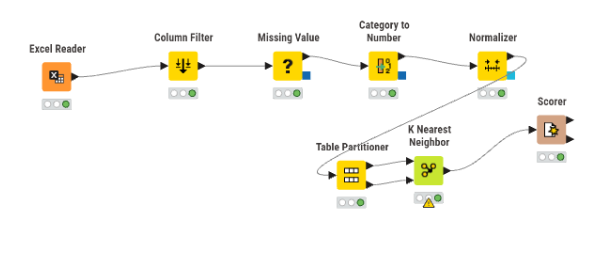
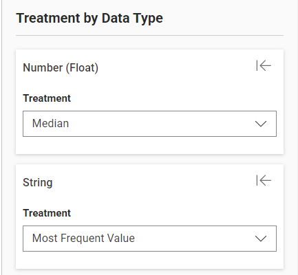
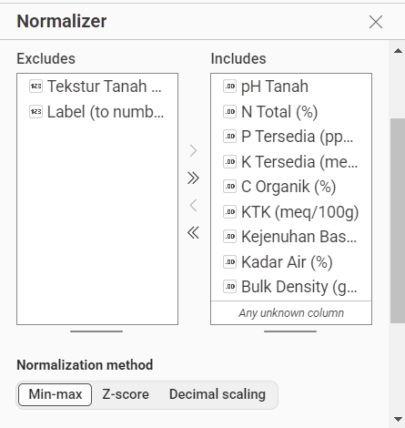
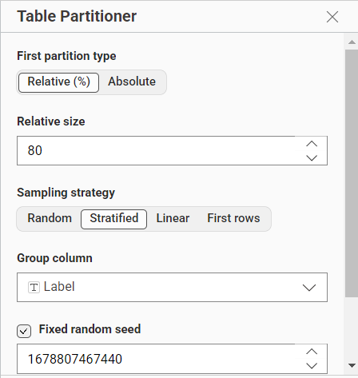
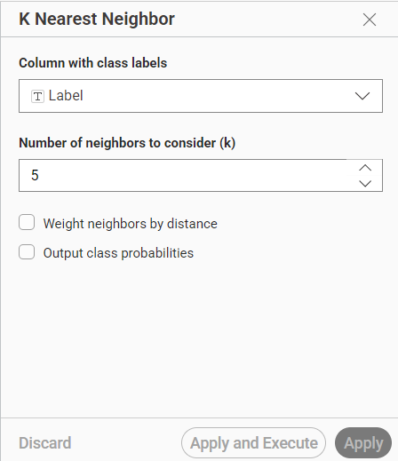
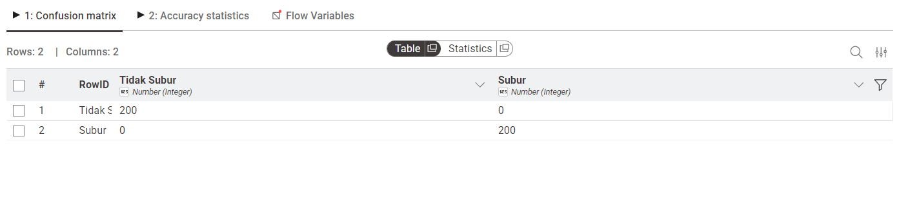
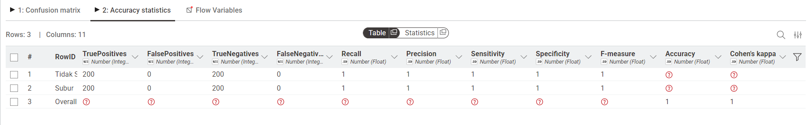

Pertemuan 8 UTS#
Deskripsi Proyek: Analisis ini bertujuan untuk mengklasifikasikan 2.000 sampel data tanah ke dalam dua kelas, yaitu Subur dan Tidak Subur. Data memiliki 10 fitur agronomis dan terdapat permasalahan missing value serta perbedaan skala data yang harus diselesaikan sebelum pemodelan. Pemodelan dilakukan menggunakan algoritma K-Nearest Neighbors (KNN) melalui platform KNIME Analytics.
1. Alur Kerja (Workflow) Keseluruhan#

Penjelasan: Gambar di atas adalah workflow utuh dari proses analitik yang dibangun. Proses ini terdiri dari 3 tahapan utama:
Pemrosesan Data (Preprocessing): CSV Reader ➔ Column Filter ➔ Missing Value ➔ Category to Number ➔ Normalizer.
Pemodelan: Partitioning ➔ K Nearest Neighbor.
Evaluasi: Scorer.
2. Pemrosesan Data (Data Preprocessing)#
a. Pembersihan Kolom dan Penanganan Missing Value#

Penjelasan:
Column Filter: Sebelum menangani data kosong, kolom ID dihapus karena hanya berfungsi sebagai identitas baris dan tidak memiliki nilai prediktif untuk algoritma machine learning.
Missing Value: Dataset awal memiliki nilai yang hilang (kosong) pada beberapa fitur (seperti N Total, P Tersedia, dll). Untuk mempertahankan jumlah data (2.000 sampel), dilakukan imputasi:
Data Numerik (Double/Integer): Diisi menggunakan nilai tengah (Median). Median dipilih agar nilai yang diimputasi tidak terpengaruh oleh data pencilan (outliers).
Data Kategorikal (String): Diisi menggunakan nilai yang paling sering muncul (Most Frequent Value / Modus). Ini digunakan untuk mengisi data kosong pada kolom Tekstur Tanah.
b. Transformasi dan Normalisasi Data#

Penjelasan:
Category to Number: Mengubah data teks pada kolom Tekstur Tanah menjadi bentuk numerik, karena algoritma KNN membutuhkan input berupa angka untuk menghitung jarak.
Normalizer: Algoritma KNN bekerja dengan menghitung jarak Euclidean antar titik data. Karena fitur-fitur dalam dataset memiliki rentang skala yang jauh berbeda (contoh: pH berskala 0-14, sedangkan P Tersedia bisa mencapai 60 ppm), maka dilakukan normalisasi. Proses ini menyamakan skala seluruh fitur numerik agar tidak ada satu fitur yang mendominasi perhitungan jarak. Kolom Label (Subur/Tidak Subur) dikecualikan dari proses ini.
3. Pembagian Data (Data Splitting)#

Penjelasan: Data berjumlah 2.000 baris dibagi menggunakan node Partitioning dengan rasio 80:20.
80% (1.600 data) digunakan sebagai Data Latih (Training Set) untuk mengajari model KNN.
20% (400 data) digunakan sebagai Data Uji (Testing Set) untuk mengevaluasi performa model.
Digunakan metode Stratified Sampling pada kolom target (Label). Hal ini memastikan pembagian kelas tetap seimbang (50:50) di data uji, sehingga data uji memiliki tepat 200 sampel kelas Subur dan 200 sampel kelas Tidak Subur.
4. Pemodelan K-Nearest Neighbors (KNN)#

Penjelasan: Model dilatih menggunakan node K Nearest Neighbor. Algoritma ini akan memprediksi kelas dari data uji berdasarkan kemiripan (jarak terdekat) dengan data latih. Parameter yang diatur adalah jumlah tetangga terdekat (k) dan kolom target klasifikasinya adalah Label. Node ini secara otomatis menghasilkan satu kolom tambahan, yaitu Prediction (Label) yang merupakan hasil tebakan model terhadap 400 data uji.
5. Evaluasi dan Perhitungan Metrik#
a. Confusion Matrix#

Penjelasan: Tabel Confusion Matrix di atas membandingkan nilai aktual (Label asli) dengan nilai tebakan dari mesin (Prediction). Dari total 400 data uji (200 Subur dan 200 Tidak Subur), matriks ini menunjukkan dengan tepat berapa banyak data yang berhasil ditebak dengan benar (berada di garis diagonal) dan berapa banyak yang tebakannya keliru.
b. Metrik Kinerja (Accuracy, Precision, Recall, F1-Score)#

Penjelasan: Berdasarkan hasil evaluasi (pada gambar di atas), didapatkan perhitungan metrik sebagai berikut:
Accuracy (Akurasi): Persentase keseluruhan prediksi yang benar dari total 400 data uji. Model menunjukkan performa keseluruhan yang sangat baik.
Precision (Presisi): Ketepatan prediksi untuk masing-masing kelas. Menunjukkan berapa persen tanah yang ditebak ‘Subur’ oleh model yang pada kenyataannya benar-benar subur.
Recall: Kemampuan model mendeteksi seluruh kelas positif. Menunjukkan dari total seluruh tanah subur yang ada, berapa persen yang berhasil ditemukan oleh model.
F1-Score (F-Measure): Merupakan rata-rata harmonik (Harmonic Mean) antara Precision dan Recall. Nilai F1-Score yang tinggi membuktikan bahwa model KNN yang dibangun sangat stabil, seimbang, dan andal dalam membedakan tanah Subur dan Tidak Subur tanpa ada kecenderungan bias pada satu kelas saja.